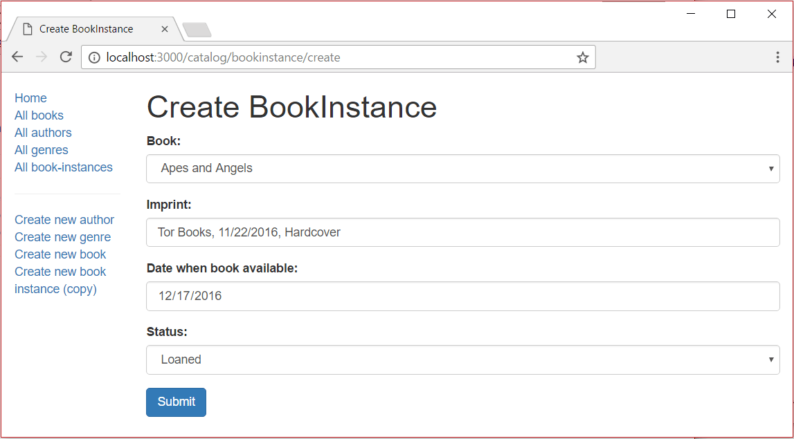

This subarticle shows how to define a page/form to create BookInstance objects. This is very much like the form we used to create Book objects.
Open /controllers/bookinstanceController.js, and add the following lines at the top of the file:
const { body,validationResult } = require('express-validator');
At the top of the file, require the Book module (needed because each BookInstance is associated with a particular Book).
var Book = require('../models/book');
Find the exported bookinstance_create_get() controller method and replace it with the following code.
// Display BookInstance create form on GET.
exports.bookinstance_create_get = function(req, res, next) {
Book.find({},'title')
.exec(function (err, books) {
if (err) { return next(err); }
// Successful, so render.
res.render('bookinstance_form', {title: 'Create BookInstance', book_list: books});
});
};
The controller gets a list of all books (book_list) and passes it to the view bookinstance_form.pug (along with the title)
Find the exported bookinstance_create_post() controller method and replace it with the following code.
// Handle BookInstance create on POST.
exports.bookinstance_create_post = [
// Validate and sanitise fields.
body('book', 'Book must be specified').trim().isLength({ min: 1 }).escape(),
body('imprint', 'Imprint must be specified').trim().isLength({ min: 1 }).escape(),
body('status').escape(),
body('due_back', 'Invalid date').optional({ checkFalsy: true }).isISO8601().toDate(),
// Process request after validation and sanitization.
(req, res, next) => {
// Extract the validation errors from a request.
const errors = validationResult(req);
// Create a BookInstance object with escaped and trimmed data.
var bookinstance = new BookInstance(
{ book: req.body.book,
imprint: req.body.imprint,
status: req.body.status,
due_back: req.body.due_back
});
if (!errors.isEmpty()) {
// There are errors. Render form again with sanitized values and error messages.
Book.find({},'title')
.exec(function (err, books) {
if (err) { return next(err); }
// Successful, so render.
res.render('bookinstance_form', { title: 'Create BookInstance', book_list: books, selected_book: bookinstance.book._id , errors: errors.array(), bookinstance: bookinstance });
});
return;
}
else {
// Data from form is valid.
bookinstance.save(function (err) {
if (err) { return next(err); }
// Successful - redirect to new record.
res.redirect(bookinstance.url);
});
}
}
];
The structure and behavior of this code is the same as for creating our other objects. First we validate and sanitize the data. If the data is invalid, we then re-display the form along with the data that was originally entered by the user and a list of error messages. If the data is valid, we save the new BookInstance record and redirect the user to the detail page.
Create /views/bookinstance_form.pug and copy in the text below.
extends layout
block content
h1=title
form(method='POST' action='')
div.form-group
label(for='book') Book:
select#book.form-control(type='select' placeholder='Select book' name='book' required='true')
- book_list.sort(function(a, b) {let textA = a.title.toUpperCase(); let textB = b.title.toUpperCase(); return (textA < textB) ? -1 : (textA > textB) ? 1 : 0;});
for book in book_list
if bookinstance
option(value=book._id selected=(bookinstance.book.toString()==book._id.toString() ? 'selected' : false)) #{book.title}
else
option(value=book._id) #{book.title}
div.form-group
label(for='imprint') Imprint:
input#imprint.form-control(type='text' placeholder='Publisher and date information' name='imprint' required='true' value=(undefined===bookinstance ? '' : bookinstance.imprint))
div.form-group
label(for='due_back') Date when book available:
input#due_back.form-control(type='date' name='due_back' value=(undefined===bookinstance ? '' : bookinstance.due_back))
div.form-group
label(for='status') Status:
select#status.form-control(type='select' placeholder='Select status' name='status' required='true')
option(value='Maintenance') Maintenance
option(value='Available') Available
option(value='Loaned') Loaned
option(value='Reserved') Reserved
button.btn.btn-primary(type='submit') Submit
if errors
ul
for error in errors
li!= error.msg
The view structure and behavior is almost the same as for the book_form.pug template, so we won't go over it again.
Note: The above template hard-codes the Status values (Maintenance, Available, etc.) and does not "remember" the user's entered values. Should you so wish, consider reimplementing the list, passing in option data from the controller and setting the selected value when the form is re-displayed.
Run the application and open your browser to http://localhost:3000/. Then select the Create new book instance (copy) link. If everything is set up correctly, your site should look something like the following screenshot. After you submit a valid BookInstance, it should be saved and you'll be taken to the detail page.
